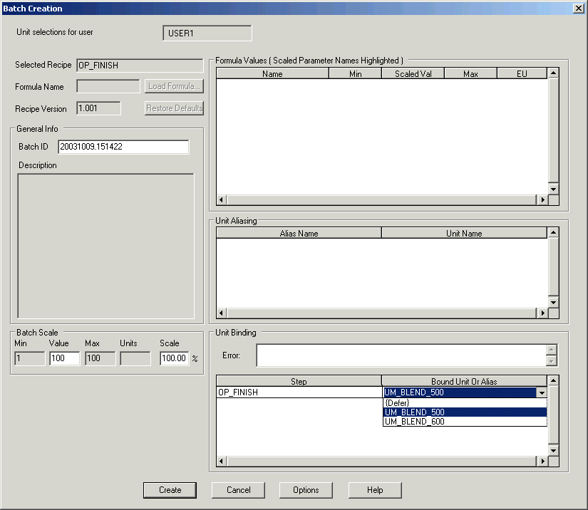
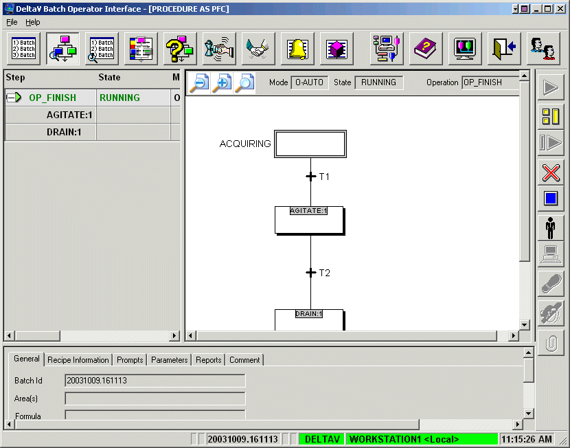

Start the Batch Operator Interface and run the batch
- Launch the Batch Operator Interface by clicking Start > DeltaV Operator > Batch Operator Interface.
- If necessary, select the workstation for the desired Batch Executive. The Batch List screen opens.
- Click the Add Batch button .
-
Select OP_FINISH from the list of available recipes.
Only those recipes specifically assigned to a Batch Executive
will appear in this list.
The
Batch Creation dialog opens.

- The default Batch ID is the date and time. You can leave it as is or edit the ID by typing an appropriate Batch ID (alphanumeric). Since this is a class-based recipe, the Bound Unit has a drop-down list from which you can select the blender you want to use. Select UM_BLEND_500.
- Click Create to add this batch to the batch list.
- Select the pending operation you just created, and then click the Start Batch button .
- Click OK when asked if you want to start the batch.
- Verify from the Batch List that the batch state indicates RUNNING.
-
Click the
Procedure as PFC button
on the toolbar to see how the
batch is progressing.

- Click the Phase Control button to see the information on this view.
- On the Phase Control screen, click Display Process Cells, then click Display Units, and then click the UM_BLEND_500 unit to view the details on this screen.
- Return to the Batch List display by clicking the first button on the toolbar and confirm that the operation goes to Complete.